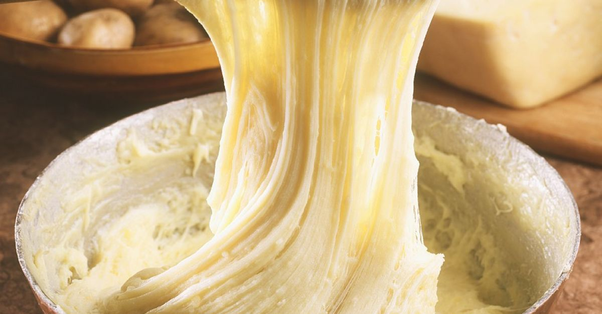

Cheesy Mashed Potato

Fluffy and gooey with cheese, while it takes a while to prepare, it is a very simple yet very filling dish! Eat it with meat and gravy and you'll be all set!
You can boil the potatoes conventionally, or if you happen to have a rice cooker, it could also work! Now here're what you're gonna need for the recipe for two!
Ingredients
- 5 Potatoes
- 1/2 Cup of Milk
- 1 to 2 tbsp Salt(to taste)
- 125g Butter
- 1/2 tbsp Pepper
- How ever much cheese you want
Steps
- Start boiling enough water in a pot to cover all of your potatoes. If you are going to use a rice cooker, ignore this step.
- Clean and peel the potatoes, and kiss them a little; it makes them yummier.
- If you are cooking them with a rice cooker, put all the potatoes in the rice cooker and put enough water for the potatoes to be under water with an inch of extra water.
- When the water starts boiling, lower the heat, put the potatoes in the pot and cover it with a lid. The time it takes for them to become soft varies, so make sure to check by stabbing them gently with any utensil available to you.
- Strain the potatoes when they are soft enough to mash.
- If you boiled them enough, mashing them should be easy, mash the potatoes with a fork.
- Add 125g of butter while you mash, it's important to add the butter while the mash is hot to melt it.
- Add 1 to 2 tbsp of salt, 1/2 tbsp of pepper, and mix until satisfied.
- Add as much cheese as you please.
- Pour 1/2 cup of milk and mash it to make the potato absorb the milk.